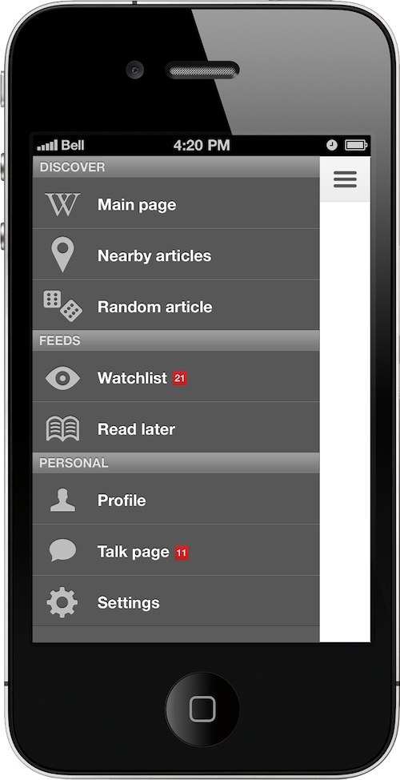
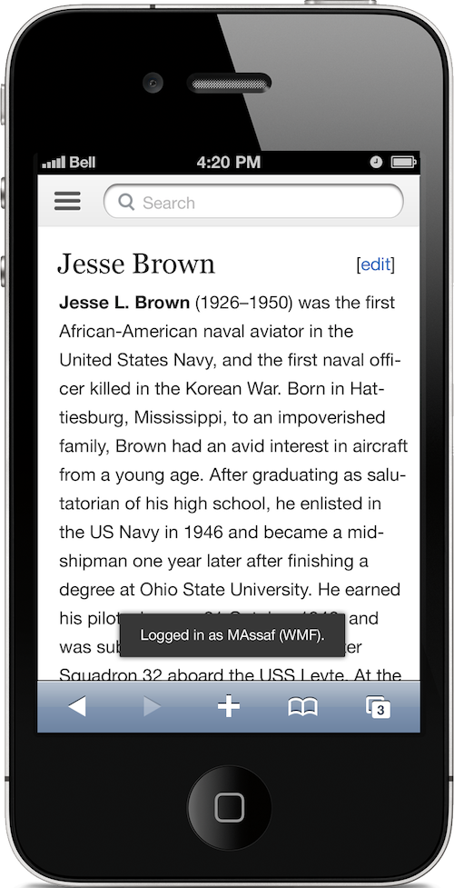
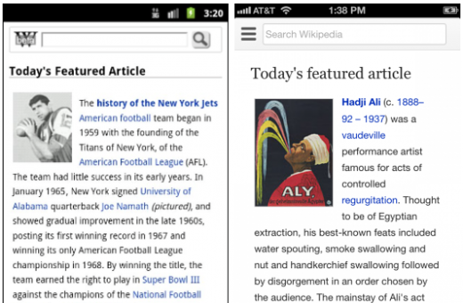
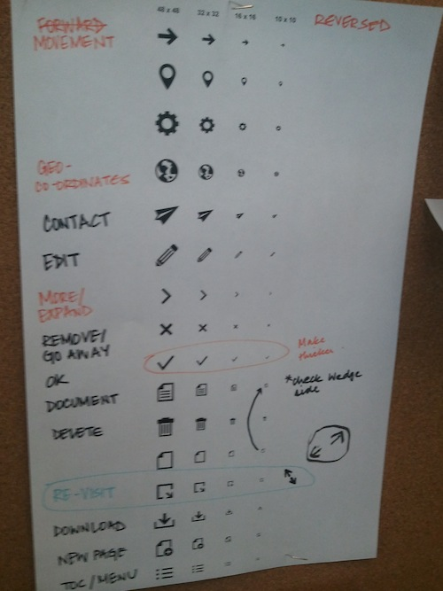
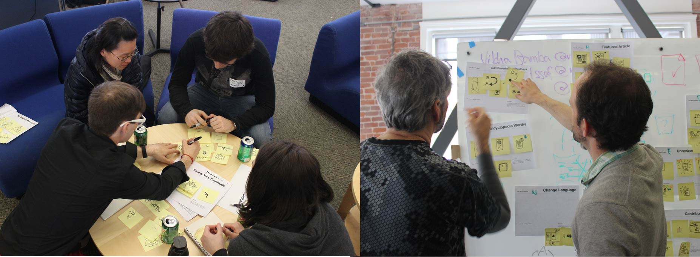
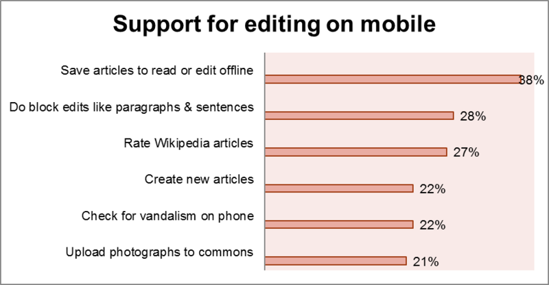

I was a UX Designer on Wikipedia's Growth Team. I worked on editor engagement and user acquistion, as well as creating a new look and feel for Wikipedia's desktop and mobile websites.
-

Mobile Navigation. I designed this based on survey results, user interviews, and a card sort conducted with internal stakeholders.
-

Improved Typography. Article typography was overhauled to utilize modular scales, more attractive headings, and more comfortable spacing.
-

Before and After. Wikipedia Mobile's main page before and after the redesign.
-

Icon Design. Early iterations of icon sets for the mobile website. I co-organized an iconathon with The Noun Project to further improve upon these concepts.
-

Iconathon. I co-organized an iconathon with The Noun Project to further improve upon Wikipedia's icon sets for web and mobile. Photo: Matthew Roth
-

Survey: Mobile usage on Wikipedia. I used these results and other user research data to define an information architecture for Wikipedia's mobile website.
-
 Card Sort & Affinity Wall. Using research data from surveys and user interviews, I led a card sort and affinity diagramming session to drive the creation of a new information architecture for Wikipedia Mobile.
Card Sort & Affinity Wall. Using research data from surveys and user interviews, I led a card sort and affinity diagramming session to drive the creation of a new information architecture for Wikipedia Mobile.


Mobile Design
I co-designed the site chrome, navigation, typography, and icons for Wikipedia's mobile website, which is becoming the dominant medium for accessing Wikipedia articles.


User Onboarding
My redesigns of Wikipedia's account creation and user onboarding process led to significantly increased signups, new user engagement, and editor retention.


Post-Edit Feedback
Feedback message design for users who completed a successful Wikipedia edit. Incorporating this design led to increased rates of edits, especially among new users.